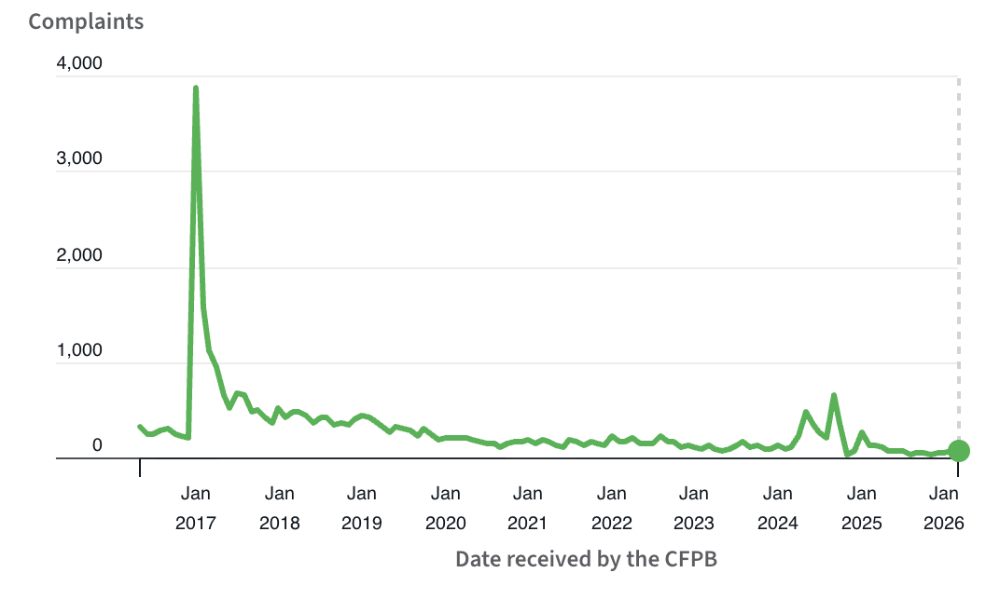
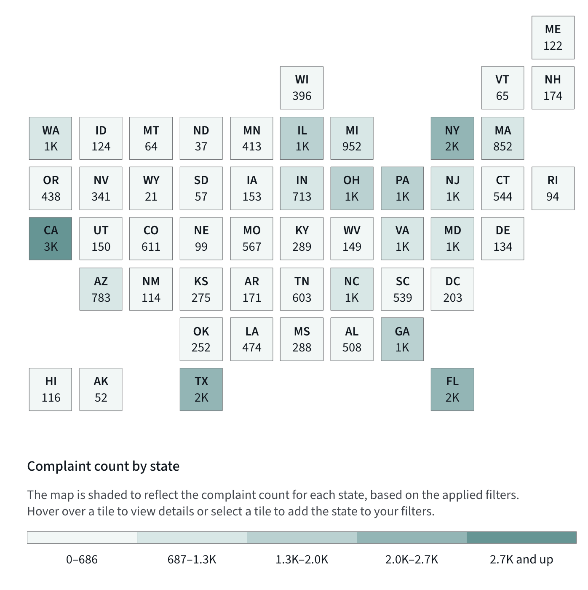

Consumer complaints against student loan servicer, Navient Solutions, LLC, have dropped off significantly since 2018, according to the Consumer Financial Protection Bureau. 
Complaints spiked in early 2017, reaching several thousand in a short period, before declining just as fast. After that spike, the trend shows a decrease over time, with complaints falling to a few hundred by 2018. From 2020 onward, complaint levels remain low and stable, with only a few fluctuations upward and a rise around 2024. Complaints drop again around 2026. The data suggests a large drop after the big surge in 2017, followed by a long period of reductions in consumer concern or reported complaints.
Geographically, the highest complaints were located in states with large populations. California had the highest with 3,000. Florida, Texas and New York had around 2,000 complaints. Less populated states did not have as many complaints. Hawaii reported 116 while Alaska reported 52.
Although complaints have declined, the data shows a lasting impact that student loan services, specifically Navient Solutions, LLC, can have on borrowers across the country.